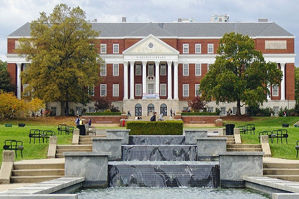
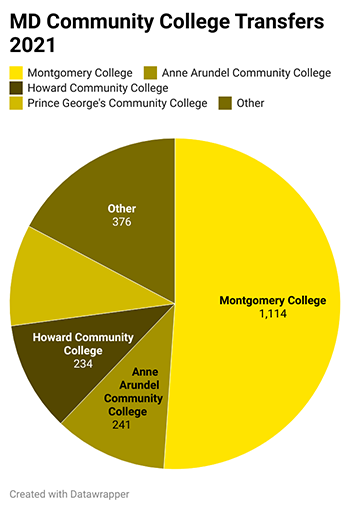
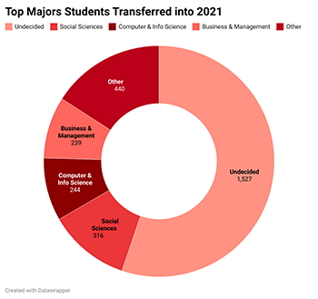

by Kara Thompson
May 12, 2022
While nearly a third of the undergraduate student population at the University of Maryland is composed of transfer students, many find the acclimation process to be challenging. Most of these transfers come from community colleges in Maryland, and so the shift to attending a four-year university can be tough.
At the beginning of the fall 2021 semester, there were 3,610 transfer students entering the University of Maryland as new students. 60.5% of them came from a Maryland community college, while 28.8% were out of state or unknown. The remainder were from the Maryland Independent College and University System, the University System of Maryland, Morgan State University or St. Mary’s University, according to the IRIS Transfer Student Dashboard.
Junior English major Jessica Smith was one of those students. She started at UMD in the fall of 2021 after attending Frederick Community College. Her admissions process went fairly smoothly, but Smith said she had some problems with adapting socially once the semester started.
“I wish there was a way for me to get to know more transfer students because I had no idea that there were that many,” she said. “I was just surprised to find that there were more students like me that had transferred and were in the same position.”
She recalls her first class here, when the class was doing icebreakers and she realized she was not alone in her status as a transfer student.
“They were going around the room and everyone was saying their name, where they were from and what year they were, and more than half the class were transfer students, which I thought was really surprising,” said Smith.
Junior public health science major Tara Nazari agrees. She transferred to the university at the start of the 2021 spring semester from Anne Arundel Community College, as one of 252 from that college during the 2020 fiscal year. Nazari always knew she wanted to go to the University of Maryland eventually but decided to save some money on tuition by attending community college first.
"When I met my roommate, she also realized that I was a transfer student and we felt sort of relieved that we had each other,” said Nazari. “I wish there was sort of a bigger community or some sort of a program [so] you don't feel totally alone once you're coming into the university.”
She, like Smith, said that she did not have any troubles during the transferring process, through the help of meeting with advisors and orientations she attended. Since Nazari transferred during the pandemic, however, she said that everything being online made it harder for her to get a feel for the university.
“I didn't really necessarily get the vibe of the school and everything until I actually came on campus the following semester,” she said.
The social aspect of switching schools was also challenging for Nazari. She felt that most people had already made their friends. She said she wished for a transfer student community so she wouldn’t feel as left out.
"When I met my roommate, she also realized that I was a transfer student and we felt sort of relieved that we had each other,” said Nazari. “I wish there was sort of a bigger community or some sort of a program [so] you don't feel totally alone once you're coming into the university.”
Ashwin Jacob, a sophomore mechanical engineering major, had a slightly different experience in transferring from a four-year university—The University of Maryland Baltimore County—instead of a community college.
“What contributed to me wanting to go here so bad was the environment, the community and then on top of that the engineering program that we have here [at UMD],” said Jacob.
He is one of 226 students who transferred to the University of Maryland’s engineering program in the 2021 fiscal year, according to the IRIS Transfer Student Dashboard.
Jacob had a different experience than Smith and Nazari, because he knew a lot of people who already went to UMD, who took him in once he got here. He recalled some events and opportunities for transfer students to meet each other but noted that the university atmosphere was warm and outgoing.
“A lot of people don't even know that you transferred or not. Everyone's just friendly… everyone's pretty welcoming here in general,” said Jacob.